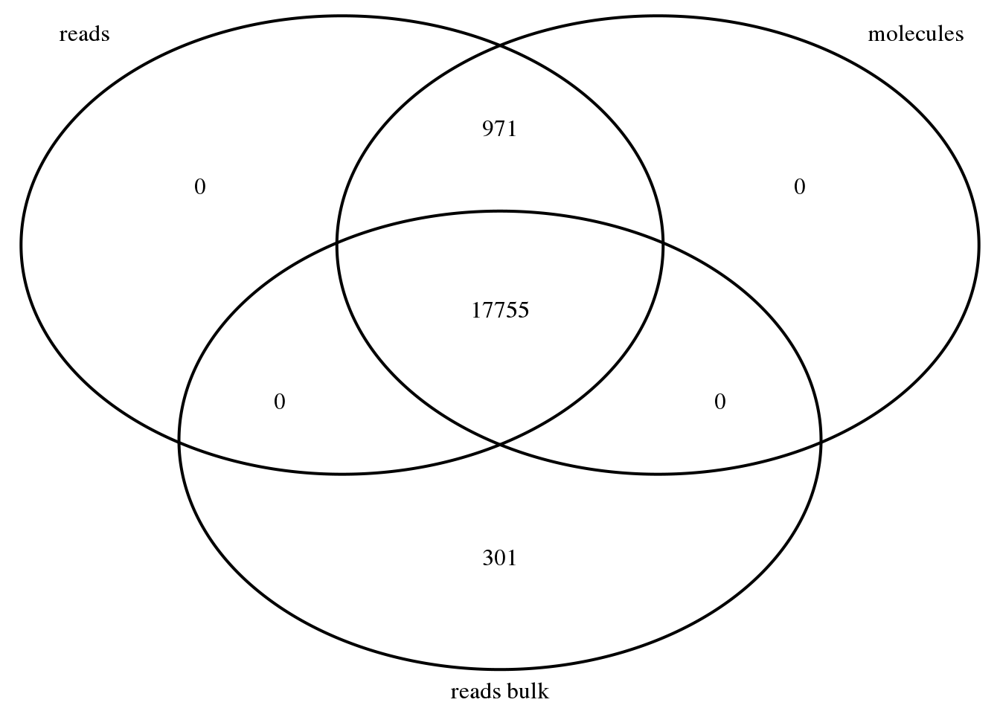

Last updated: 2017-01-30
Code version: aedf051
This is recreating code from http://jdblischak.github.io/singleCellSeq/analysis/prepare-counts.html.
library("data.table")
library("dplyr")
library("VennDiagram")This analysis will take the matrix from the fastq to counts anayisis pipeline (sample-by-gene) to a standard gene-x-sample matrix. I will also create annotation files and romove the genes with no observed sequencing data in the experiment. I will use the data from git hub rather than the data I created because I want to look at the whole experiment rather than one plate at this point.
reads_raw <- fread("../../singleCellSeq/data/reads-raw-single-per-sample.txt")
setDF(reads_raw)Explore this data:
dim(reads_raw)[1] 864 20422Ths has rows for each individule and the columns give information about the sample then give counts for each gene.
Create annotation file for single cell samples:
anno <- reads_raw %>%
select(individual:well) %>%
mutate(batch = paste(individual, replicate, sep = "."),
sample_id = paste(batch, well, sep = "."))
head(anno) individual replicate well batch sample_id
1 NA19098 r1 A01 NA19098.r1 NA19098.r1.A01
2 NA19098 r1 A02 NA19098.r1 NA19098.r1.A02
3 NA19098 r1 A03 NA19098.r1 NA19098.r1.A03
4 NA19098 r1 A04 NA19098.r1 NA19098.r1.A04
5 NA19098 r1 A05 NA19098.r1 NA19098.r1.A05
6 NA19098 r1 A06 NA19098.r1 NA19098.r1.A06This annoation file has information about the sample, replicatte, batch.
Transpose the matrix so that it is gene-x-sample.
reads <- reads_raw %>%
select(starts_with("ENSG"), starts_with("ERCC")) %>%
t
colnames(reads) <- anno$sample_id
reads[1:5, 1:5] NA19098.r1.A01 NA19098.r1.A02 NA19098.r1.A03
ENSG00000186092 0 0 0
ENSG00000237683 0 0 0
ENSG00000235249 0 0 0
ENSG00000185097 0 0 0
ENSG00000269831 0 0 0
NA19098.r1.A04 NA19098.r1.A05
ENSG00000186092 0 0
ENSG00000237683 42 0
ENSG00000235249 0 0
ENSG00000185097 0 0
ENSG00000269831 0 0Import eaw molecules for single cell samples.
molecules_raw <- fread("../../singleCellSeq/data/molecules-raw-single-per-sample.txt")
setDF(molecules_raw)
dim(molecules_raw)[1] 864 20422This data has rows by individuale and has gene columns like the reads data.
Conform single cell samples in reads and molecules files are in same order.
stopifnot(anno$individual == molecules_raw$individual,
anno$replicate == molecules_raw$replicate,
anno$well == molecules_raw$well)Transpose the matrix so it is also gene-x-sample.
molecules <- molecules_raw %>%
select(starts_with("ENSG"), starts_with("ERCC")) %>%
t
colnames(molecules) <- anno$sample_id
molecules[1:5, 1:5] NA19098.r1.A01 NA19098.r1.A02 NA19098.r1.A03
ENSG00000186092 0 0 0
ENSG00000237683 0 0 0
ENSG00000235249 0 0 0
ENSG00000185097 0 0 0
ENSG00000269831 0 0 0
NA19098.r1.A04 NA19098.r1.A05
ENSG00000186092 0 0
ENSG00000237683 1 0
ENSG00000235249 0 0
ENSG00000185097 0 0
ENSG00000269831 0 0Now this file looks like the first one.
Import raw read counts for bulk samples.
reads_bulk_raw <- fread("../../singleCellSeq/data/reads-raw-bulk-per-sample.txt")
setDF(reads_bulk_raw) #converts the data.table to a data.frameCreate annotation file for the bulk samples as we did with the single cells.
anno_bulk <- reads_bulk_raw %>%
select(individual:well) %>%
mutate(batch = paste(individual, replicate, sep = "."),
sample_id = paste(batch, well, sep = "."))
head(anno_bulk) individual replicate well batch sample_id
1 NA19098 r1 bulk NA19098.r1 NA19098.r1.bulk
2 NA19098 r2 bulk NA19098.r2 NA19098.r2.bulk
3 NA19098 r3 bulk NA19098.r3 NA19098.r3.bulk
4 NA19101 r1 bulk NA19101.r1 NA19101.r1.bulk
5 NA19101 r2 bulk NA19101.r2 NA19101.r2.bulk
6 NA19101 r3 bulk NA19101.r3 NA19101.r3.bulkNow transpose the bulk read informaiton to match the gene-x-sample format.
reads_bulk <- reads_bulk_raw %>%
select(starts_with("ENSG"), starts_with("ERCC")) %>%
t
colnames(reads_bulk) <- anno_bulk$sample_id
reads_bulk[1:5, 1:5] NA19098.r1.bulk NA19098.r2.bulk NA19098.r3.bulk
ENSG00000186092 0 0 0
ENSG00000237683 50 61 39
ENSG00000235249 0 0 0
ENSG00000185097 0 0 0
ENSG00000269831 0 0 0
NA19101.r1.bulk NA19101.r2.bulk
ENSG00000186092 0 0
ENSG00000237683 56 41
ENSG00000235249 0 0
ENSG00000185097 0 0
ENSG00000269831 0 0I will look for genes out of the 20419 genes that were never observed in the experiment.
stopifnot(rownames(reads_bulk) == rownames(reads),
rownames(reads) == rownames(molecules))
genes_observed_reads_bulk <- rownames(reads_bulk)[rowSums(reads_bulk) > 0]
genes_observed_reads <- rownames(reads)[rowSums(reads) > 0]
genes_observed_molecules <- rownames(molecules)[rowSums(molecules) > 0]
stopifnot(genes_observed_molecules %in% genes_observed_reads)18726 genes has at least one observation in the single read data. 18726 genes had at least one observation in the single cell molecule data. 18056 genes has at least one observation in te bulk read data. As expected, all genes with at least one observed molecule in at least one single cell also had at least one observed read in at least one single cell.
genes_venn <- venn.diagram(x = list("reads" = genes_observed_reads,
"molecules" = genes_observed_molecules,
"reads bulk" = genes_observed_reads_bulk),
filename = NULL, euler.d = FALSE, scaled = FALSE)
grid.newpage()
grid.draw(genes_venn)
This ven diagram shows the intesection of the genes found in each type of sequencing data. I will now remove all genes with no observed rean in either bulk or single cell sample.
genes_observed <- union(genes_observed_reads, genes_observed_reads_bulk)
reads <- reads[rownames(reads) %in% genes_observed, ]
molecules <- molecules[rownames(molecules) %in% genes_observed, ]
reads_bulk <- reads_bulk[rownames(reads_bulk) %in% genes_observed, ]This leaves 19027 genes. (genes_observed)
This code outputs the annotation files.
write.table(anno, "../../singleCellSeq/data/annotation.txt", quote=FALSE, sep="\t", row.names = FALSE)
write.table(anno_bulk, "../../singleCellSeq/data/annotation-bulk.txt", quote=FALSE, sep = "\t", row.names=FALSE)Output read counts.
write.table(reads, "../../singleCellSeq/data/reads.txt", quote = FALSE, sep = "\t", col.names = NA)
write.table(reads_bulk, "../../singleCellSeq/data/reads-bulk.txt", quote=FALSE, sep="\t", col.names = NA)Output molecule counts.
write.table(molecules, "../../singleCellSeq/data/molecules.txt", quote= FALSE, sep= "\t", col.names = NA)sessionInfo()R version 3.3.2 (2016-10-31)
Platform: x86_64-redhat-linux-gnu (64-bit)
Running under: Scientific Linux 7.2 (Nitrogen)
locale:
[1] LC_CTYPE=en_US.UTF-8 LC_NUMERIC=C
[3] LC_TIME=en_US.UTF-8 LC_COLLATE=en_US.UTF-8
[5] LC_MONETARY=en_US.UTF-8 LC_MESSAGES=en_US.UTF-8
[7] LC_PAPER=en_US.UTF-8 LC_NAME=C
[9] LC_ADDRESS=C LC_TELEPHONE=C
[11] LC_MEASUREMENT=en_US.UTF-8 LC_IDENTIFICATION=C
attached base packages:
[1] grid stats graphics grDevices utils datasets methods
[8] base
other attached packages:
[1] VennDiagram_1.6.17 futile.logger_1.4.3 dplyr_0.5.0
[4] data.table_1.10.0 devtools_1.12.0 workflowr_0.3.0
[7] rmarkdown_1.3
loaded via a namespace (and not attached):
[1] Rcpp_0.12.9 knitr_1.15.1 magrittr_1.5
[4] R6_2.2.0 stringr_1.1.0 tools_3.3.2
[7] DBI_0.5-1 lambda.r_1.1.9 git2r_0.18.0
[10] withr_1.0.2 htmltools_0.3.5 yaml_2.1.14
[13] lazyeval_0.2.0 rprojroot_1.2 digest_0.6.11
[16] assertthat_0.1 tibble_1.2 futile.options_1.0.0
[19] memoise_1.0.0 evaluate_0.10 stringi_1.1.2
[22] backports_1.0.5 This site was created with R Markdown